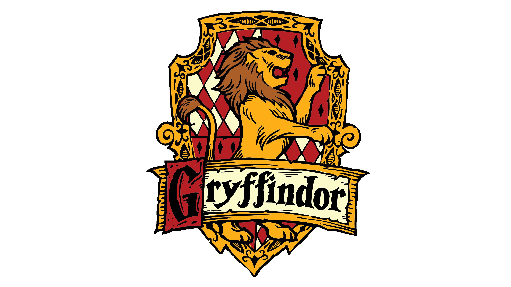
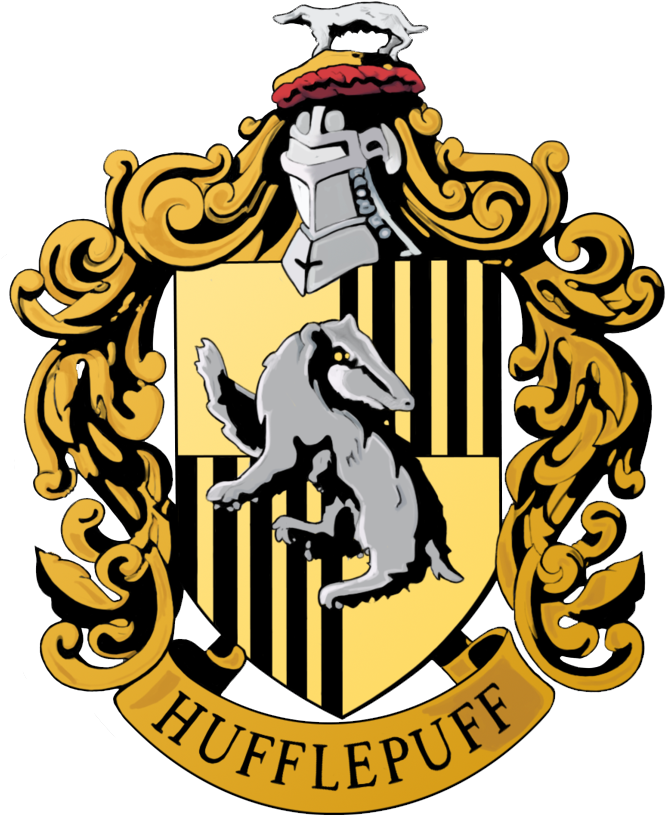

Sobre a saga:
Harry Potter é um garoto órfão que vive infeliz com seus tios, os Dursleys. Ele recebe uma carta contendo um convite para ingressar em Hogwarts, uma famosa escola especializada em formar jovens bruxos. Inicialmente, Harry é impedido de ler a carta por seu tio, mas logo recebe a visita de Hagrid, o guarda-caça de Hogwarts, que chega para levá-lo até a escola. Harry adentra um mundo mágico que jamais imaginara, vivendo diversas aventuras com seus novos amigos, Rony Weasley e Hermione Granger.
As Casas
Grifinória, Sonserina, Corvinal e Lufa-Lufa! Quando os quatro fundadores de Escola de Magia e Bruxaria de Hogwarts decidiram criar a escola, lá em 990 d.C., eles optaram por selecionar os alunos para suas casas (turmas) de acordo com as características que mais admiravam e que desejavam nutrir em seus estudantes. Desde então, a Escola manteve as turmas que já guardam muita história, integrantes famosos e alguns segredos.
-

Casa de Grifinória
-

Casa de Sonserina
-

Casa de Lufa-Lufa
-

Casa de Corvinal